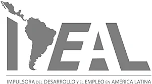
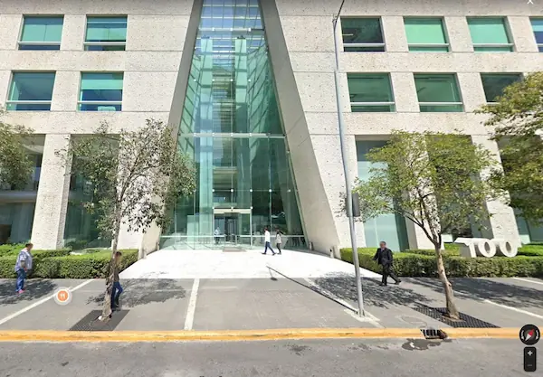

Nuestra Historia
Grupo Servyre fué fundado en 1971 y cuenta con millones de kilómetros conservados, mantenidos y señalizados a lo largo de México. Actualmente, somos uno de los principales líderes a nivel nacional en conservación, mantenimiento e inteligencia de tránsito, así como especialistas en proyectos de infraestructura vial. Nos consolidamos como una de las empresas más importantes proveedoras en el mercado de la ingeniería de tránsito, atendiendo a gobiernos federales, estatales y municipales, además de clientes del sector privado.

Más de 50 años de experiencia liderando la infraestructura vial en México
Innovamos día con día para ofrecer soluciones integrales que abarcan el diseño, fabricación, suministro, colocación, mantenimiento y desarrollo de software de nuestros servicios, sistemas y productos.
Obras Destacadas
Momentos clave que marcaron nuestra trayectoria
Señalización Ejes Viales, CDMX
Implementación del sistema de señalización en los principales ejes viales de la Ciudad de México, marcando el inicio de nuestra trayectoria en infraestructura urbana.


Instalación de Peaje Automático CAPUFE
Pioneros en la implementación de sistemas de peaje automatizado en las principales autopistas del país, optimizando el flujo vehicular.
Instalación de Semáforos Guadalajara
Modernización del sistema de semaforización en Guadalajara, mejorando significativamente la movilidad urbana en la segunda ciudad más importante del país.


Sistema SAE, Macrobús, Guadalajara
Implementación del sistema de ayuda a la explotación para el Macrobús, revolucionando el transporte público en la zona metropolitana de Guadalajara.
Instalación ITS (Michoacán – Lázaro Cárdenas)
Despliegue de sistemas inteligentes de transporte en el corredor Michoacán-Lázaro Cárdenas, mejorando la seguridad y eficiencia del tráfico vehicular.


APP Conservación del tramo Saltillo – Mty. – La Gloria
Contrato vigente de conservación y mantenimiento integral del importante corredor noreste, garantizando la seguridad y calidad de la infraestructura.
Centro Nacional de Control, CAPUFE
Desarrollo e implementación del Centro Nacional de Control de CAPUFE, centralizando la gestión y monitoreo de la red carretera nacional.


Señalamiento y sistemas de contención Barranca Larga – La Ventanilla
Proyecto integral de señalización y sistemas de seguridad vial en uno de los tramos más importantes de la costa oaxaqueña.
ITS Autopista Real del Monte - Huasca
Implementación de tecnología de vanguardia en sistemas inteligentes de transporte para la autopista Real del Monte - Huasca, Hidalgo.


Contratos de Señalamiento Vial, Sistemas de Contención, Mantenimiento y Conservación
Alianzas estratégicas continuas con la SCT, CAPUFE y principales constructoras del país, consolidando nuestra posición como líder en infraestructura vial.
Nuestros Principales Clientes Nacionales



Nuestro Corporativo
P.º de los Tamarindos 100, Piso #2, Bosques de las Lomas, Cuajimalpa de Morelos, 05120, CDMX
